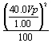

Table 4: RF POWER CALCULATION WITH NO LOSS
 X dummy load and cables attenuation
= RF Power X dummy load and cables attenuation
= RF Power where “X” and “X” in the above formula signifies multiplication Assume Z = 50 Ω, Vpeak = 40.0, scope correction factor = 1.00 (no loss), dummy load and cables atten. = 1000, (dummy load and cables are all ideal)  This result assumes a theoretically perfect situation in which there is no loss. These situations, in common practice, rarely exist! |